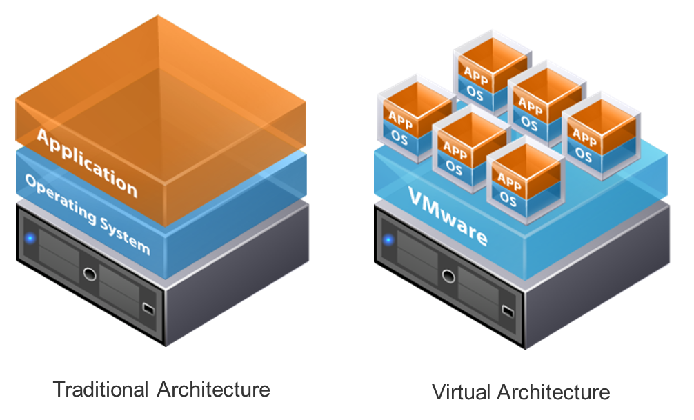

La gestion et la maintenance des réseaux et systèmes informatiques.
| Notion | Definition | Image |
|---|---|---|
| Réseau informatique | C'est un ensemble d’ordinateurs connectés entre eux pour partager des ressources (fichiers, imprimantes, etc.). Par exemple, dans une entreprise, tous les ordinateurs sont connectés au même réseau pour accéder à Internet ou imprimer des documents. | |
| Sécurité réseau | Un ensemble de techniques pour protéger un réseau informatique contre les attaques ou les accès non autorisés. Cela inclut des pare-feu, des antivirus, et des systèmes de chiffrement pour protéger les données sensibles. | |
| Virtualisation | Une technologie qui permet de faire fonctionner plusieurs systèmes d’exploitation sur une seule machine physique, en créant des « machines virtuelles ». Cela aide à optimiser l'utilisation des ressources d'un serveur. |  |